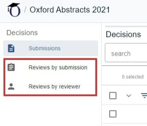
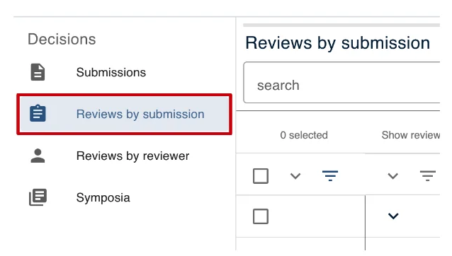
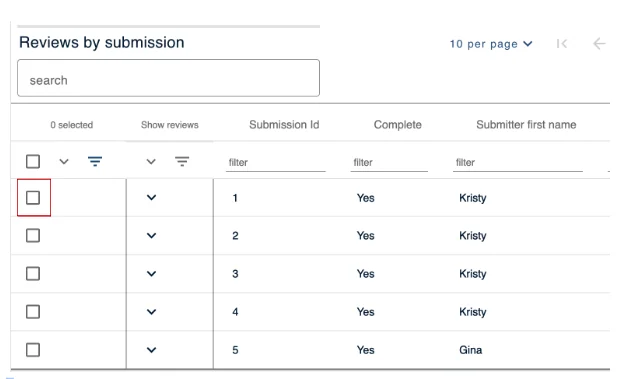
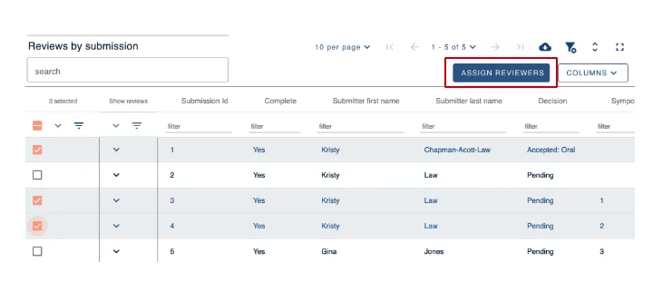
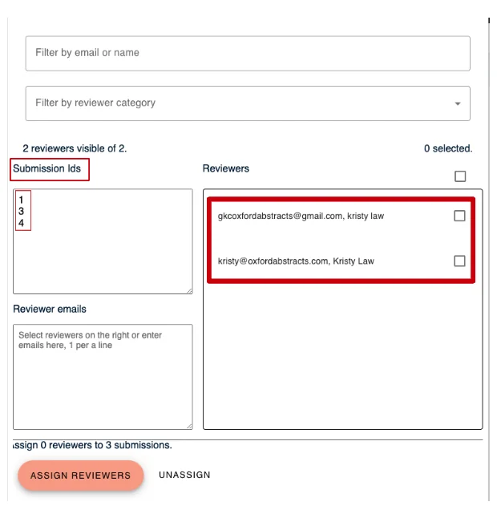
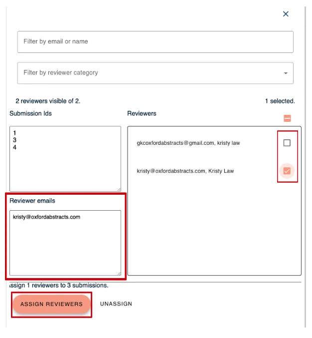

Assigning submissions to reviewers as a committee member
If permissions allow, committee members can assign submissions to reviewers.#
It is advisable to read Viewing and making decisions first.
After logging in to your personal dashboard, click on the event you have been assigned as a committee member.
In the committee screen, you have the choice of assigning reviews by submission, or reviews by reviewer. Click on your chosen option.

Click on Reviews by submission in the left hand column.

Next select the submission/s you wish to assign to a reviewer by ticking the boxes relating to those submissions.

Once you have selected all the submissions you need to, click on the Assign Reviewers tab - on the top right of the screen.

On the next screen you will see which submission ID's you have selected in the box titled "Submission Ids". To the right there is a box with all the Reviewers you can select from to review submissions.

Tick the box next to the email address and name of the reviewer you wish to review the submission.
Their email address will appear in the Reviewer Emails box.
Once you have chosen all the reviewers you wish to assign submissions too, click Assign Reviewers.

You can also assign submission to reviewers by searching in the category field.
For further instruction on how to do this - please watch our Instruction video at the top of the page.
For further guidance on assigning, see Assigning and unassigning a submission to a reviewer.
If you require further assistance please get in touch with our help desk via our Contact Form.
Did this page solve it?
Thanks — this helps us fix it.